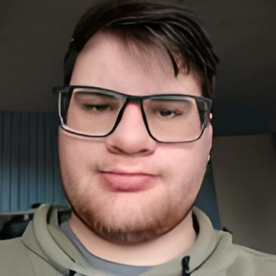

SOBRE
HORA DE SE APRESENTAR!

Olá, meu nome é Estevão Bonatto!
UM POUCO SOBRE MIM
Minha jornada pelo mundo da programação!
Na escola sempre busquei algum objetivo para a vida no futuro, analisei as incontaveis areas de estudo que talvez fossem boas no futuro, estava decidido emcursas psicologia, o que eu não esperava é conhecer o mundo dos Códigos!
Foi uma paixão a primeira vista, depois vei oo vicio: devorei incontaveis videos de tutorial pelo Youtube a fora. Cursei o vestibular decidido em cursar Ciencia da Computação, unico curso disponivel da area em minha cidade.